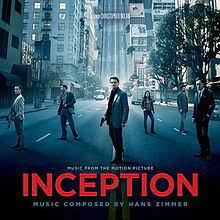
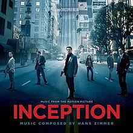
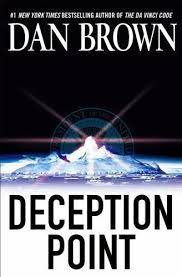
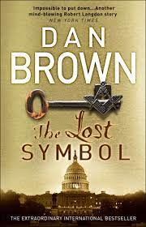
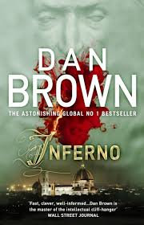
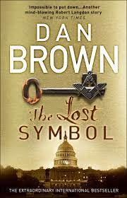
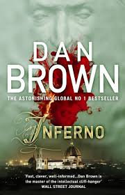

About me!
Hello my name is Ivona Mirceska ,I am 21 years old and I live in Skopje.Currently I am a college student studying computer engineernig and information technology at the Faculty of Electrical Ingineering & Information Technologies.On this page I will present to you my perosnal interests of the following topics:favourite movies,music,books and etc.
My interests and links to my favourite sites
Movies
The type of movie genre I prefer watching is Scince-Fiction,Mystery,Action or Conspiracy.The reason why I prefer these types of movies is because i think it keeps the viewer alert and entertained throughout the intirety of the movie and helps them dissasociate from reality.My favourite movies from this genre are:Interstellar,The day after tommorow,Inception,Tenet,Geostorm.

 
 

Music
My favourite musician is Mika.I find his songs unique because they are very calming and relaxing but still hold so much power because of his voise and the meaning behind his Lyrics.My favourite Mika songs are Grace Kelly,Take it easy,Love Today,Blame it on the girls,Love you when I am drunk and etc.
Books
Dan Brown is an author I came across by accident.Since discovering his work I haven't been able to put his books down.He usually writes books with a thriller theme and those are the ones a enjoy the most.My favourites are:Deception point,Digital Fortress,The Davinci Code,The Lost Symbol,Inferno.
 
  
 